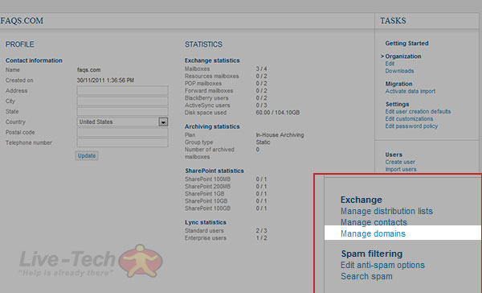
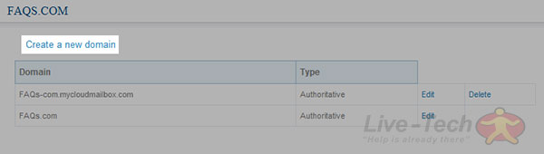
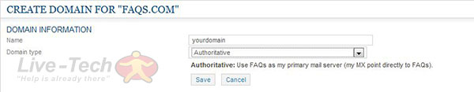

How To Add A Domain Alias For Exchange 2013
Synopsis
How to add a domain alias (Exchange 2013)
Applicable to
All Live-Tech 2013 hosted Exchange accounts.
Pre-requisite
You must have a Live-Tech 2013 hosted Exchange account
How to
- Log into the 2013 Control Panel
- Click on Domains located in the Exchange section under Tasks.

- Click on Create a new domain, located above the pre-existing domains list.

- In the Name field, enter the name you want to give to your new domain alias and in the Domain typefield, select Authoritative if Live-Tech administers all emails for that domain or select External relay if you are forwarding emails to Live-Tech from another provider. Then, click on Save.

Feel free to contact us for any other question.
Keywords
domain alias, Control Panel, Exchange 2013